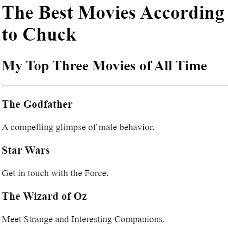
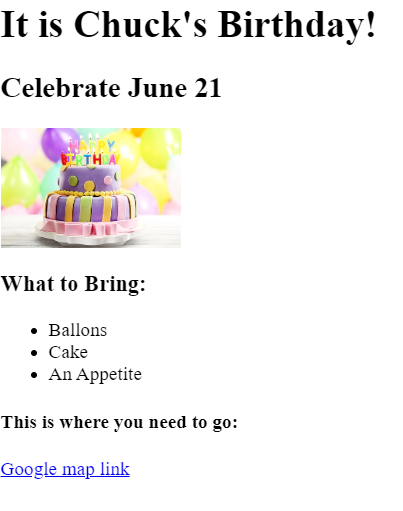

Chuck Weko's First Website
Join the journey!
This website is a hand crafted project to learn how to provide the content that bureaucrats need.
A Simple Movie Ranking

A Birthday Party Invitation

About
Contact Me